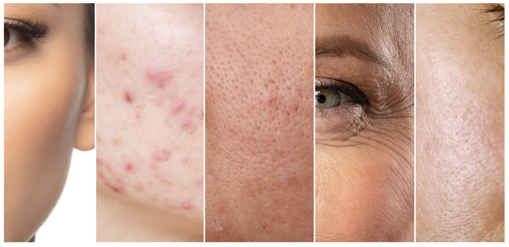
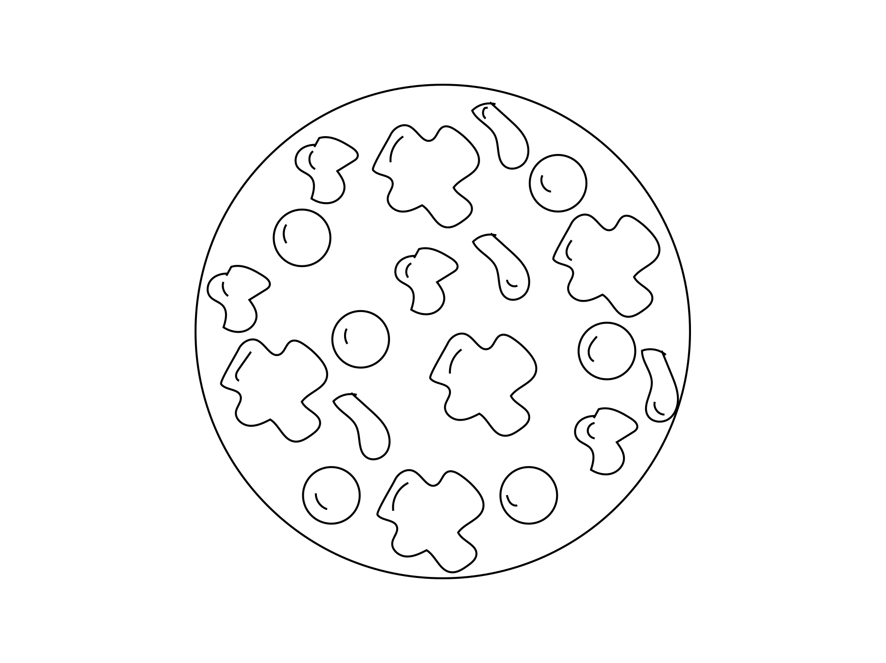

Hvad er de forskellige hudtyper?
Læs og lær hvordan du bedst muligt kan identificere din egen hudtype, når vi her nedenfor forklarer de 5 forskellige hudtyper. Formålet med dette er, at når man kender sin hudtype, kan man købe produkter rettet mod netop dette, og hermed få det bedste resultat.

De 5 forskellige hudtyper
Hud er en kompleks snak. Huden er menneskets største organ, og kan derfor sagtens indholde flere forskellige slags hudtyper forskellige steder på kroppen. Yderemere forandrer din hud sig igennem livet, og derfor også dens behov. Der mere end 10,000 diagnosticerbare hudproblemer. Det står derfor klart, at ikke alle hudplejeprodukter matcher alle hudtyper, og at få produkter der passer til netop ens hudtype kan være altafgørende for et optimalt resultat. Selvom din hud er unik, skal man huske på, at du højst sandsynligt deler forskellige (hud)træk med andre mennesker. Det er kun til din fordel, da det hjælper os som dermatologer, at lave nogle produkter der fungerer for netop din hudtype, og ikke kun din specifikke hud.
Normal hudtype
Når der siges normal hudtype, menes der at den karakteriseres ved ikke at være for tør eller for olieret og ved naturligt at være velhydreret. Derudover er det som regel en hud, der er lidt eller slet ikke sensitiv, hvilket betyder at du oftest kan bruge en lang række produkter (og aktive ingredienser) uden at din hud reagerer negativt. Normal hud kan også refereres til som velbalanceret hud. Det betyder, at hudens sebum (olie) produktion og fugtniveau naturligt, altså uden hjælp fra eksempelvis hudplejeprodukter, er velbalanceret. Ikke for meget olie og fugt, heller ikke for lidt.
Sådan tager du dig af den normale hudtype
En hudplejerutine for en normal hudtype kan være ret simpel og behøver egentlig ikke være særlig unik, eftersom det i høj grad handler om at opretholde hudens allerede gode balance. Selvom du har velbalanceret hud, kan eksterne stimuli og sæsonmæssige variationer påvirke din hud negativt. Med det sagt anbefaler vi, at din hudplejerutine reflekterer de her udfordringer, der potentielt set kan være skadende for hudens ellers velbalancerede tilstand. Vi tror på, at holde det simpelt, og umiddelbart kun ændre rutine når der er tale om eksterne stimuli og sæsonmæssige variationer. Det betyder altså, at ens fugtighedscreme bør følge sæsonen: Lette cremer i løbet af sommeren og ideelt set en tykkere konsistens gennem vinteren for at imødekomme tør hud.
Kombineret hudtype
Som der indikeres i navnet, er denne hudtype oftest karakteriseret ved at være en kombination af de forskellige hudtyper og deres symptomer. Eksempelvis kunne dette bestå af en kombination af olieret og tør hud, hvor det oftest vil være T-zonen der vil være olieret, og kinderne der vil tørre. Tør hud er som oftest mere sensitiv, da det er et mere eksponeret område, med kompromis på hudens naturlige forsvarslag. Måden man oftest ser at ens hud er sensitiv, er ved udslag og inflamation af produkter. Her skal der eventuelt findes mildere og mindre aktive ingredienser i ens produkter, end dem der benyttes.
Sådan tager du dig af den kombinerede hudtype
Kombineret hud kan være lidt kompleks at tage sig af med de potentielt modstridende ingredienser, er der behov for for at imødekomme forskellige symptomer af kombineret hud. Der kan derfor ofte være brug for en meget præcis og til tider kompliceret hudplejerutine. Men det gør sig stadig gældende, at den basale rutine som minimum skal hedde cleanser, fugt og solcreme. Den fugtgivende del af rutinen kan bestå af forskellige produkttyper. En Face Cream bør være en del af rutinen, men afhængigt af alvorligheden og hudens natur, kan spot treatments og serummer være nødvendige også. Spot treatments giver mening, når der er få og ‘lokale’ urenheder, som ville være svære at ramme med en dedikeret ansigtscreme, fordi det så ville betyde, at du også vil påføre denne creme til resten af ansigtet og muligvis gøre mere skade end gavn i resten af ansigtet. Hvis huden generelt har brug for meget fugt, vil en serum være et godt supplement til at booste dette. Når man skal imødekomme forskellige behov på den selvsamme hud, kan det kræve meget specifikke ingredienser, som potentielt set kan være modstridende med hinanden. Altså ingredienser, som du helst ikke skal bruge på samme tid. Så ved at have forskellige produkter, der imødekommer forskellige behov, kan det passende gøres ved at have én morgenrutine og én aftenrutine.
Sensitiv hudtype
Føler du ofte, at din hud klør, brænder, svier eller at den er 'stram' efter du har brugt hudplejeprodukter eller hvis der er sket et pludseligt skift i temperaturen udenfor? Så har du højst sandsynligt sensitiv hud. Sensitiv hud er karakteriseret ved hud, der er særligt sensitiv for eksterne faktorer, hvad end det er bestemte temperaturer (som tør og koldt vejr), makeup, sæbe eller hudpleje. Derudover kan denne hudtype også karakteriseres ved at have et svækket naturligt forsvar.
Sådan tager du dig af den sensitive hudtype
For den sensitive hudtype anbefaler vi også en rutine der, som minimum, består af cleanser, fugt og beskyttelse. Det er essentielt, at hudplejeprodukterne er nænsomme. Særligt cleanseren. Cleansers er designet til at fjerne snavs og olie fra huden, hvilket betyder, at cleansers til dels kan fjerne noget af hudens beskyttende lag. Et lag, der i forvejen kan være udfordret af den sensitive hudtype. Sagt med andre ord, så skal cleanseren selvfølgelig stadig cleanse, men den skal ikke rense huden fuldstændig. Ansigtgscremen skal gerne hjælpe hudens sensitive natur og samtidig styrke hudbarrierens integritet.
Olieret hudtype
Den olierede hudtype er karakteriseret ved at have en overproduktion af hudens naturlige olie. Det medfører ofte forstoppede porer og deraf bumser. Denne hudtype er som regel eksponeret for akne og udbrud.
Sådan tager du dig af den olierede hudtype
Cleanseren bør være effektiv, måske endda til den kradse side, for at fjerne overskydende olie i huden. Overproduktion af olie betyder også, at ansigtscremen bør være til den lette side. Ansigtscremens fornemmeste opgave er at sørge for at rense dybt i de tilstoppede porer, mattere olien og slutteligt reducere hudens produktion af olie (sebum).
Tør hudtype
Den tørre hudtype er generelt karakteriseret ved at være rå og flaget, og kan føles 'stram' at røre ved. I slemme tilfælde kan det også betyde sprækker og revner samt intens kløen. De fleste af os har prøvet at have en grad af tør hud på et tidspunkt i vores liv. For mange mennekser er tør hud en midlertidig tilstand af huden, som skyldes bestemte ting - såsom årstiden, livsstilsændringer eller medicin. Tør hud påvirker ofte bestemte steder af kroppen, såsom ben og hænder, eller det kan vise sig som mindre plamager i ansigtet. Tør hud skyldes for det meste et tab af hudens naturlige lag af beskyttende lipider, der dækker hudens overflade. Dette medvirker, at hudens celler bliver mere udsatte og at de mister fugt. Tør hud kan skyldes lav fugtighed i luften på grund af vejret eller airconditions og opvarmning af rum. Det kan også skyldes en aldringsproces eller en reaktion på medicin. Når du oplever tør hud, er det vigtigt, at du reagerer hurtigt, fordi graden af tør hud ofte forværres med tiden. Tør hud kan lede til ret voldsom kløen, revner og endnu mere tab af hudens beskyttende lag. Derudover kan intens kløen medføre infektioner i huden, hvilket resulterer i endnu flere komplikationer.
Sådan tager du dig af den tørre hudtype
Hudplejerutinen mod tør hud bør også følge cleanser, fugt og beskyttelse tankegangen. For tør hud er det vigtigt, at cleanseren er nænsom fordi en mere skrap cleanser potentielt set kan forværre den i forvejen udfordrede hudbarriere. Ansigtscremen må gerne være i den fede ende og have en høj koncentration af humektanter - ingredienser der tiltrækker og binder fugt i hudens øverste lag.